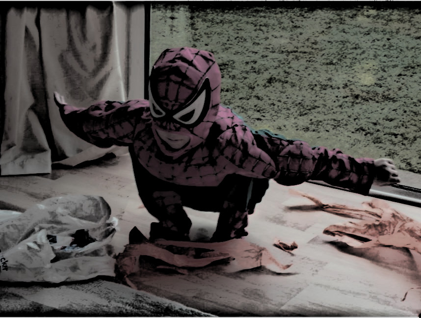

Where I Come From
I am from the home island,
with its ever dropping droplets,
and its people’s stunted emotions.
The chase and zest of camping,
I was born beside a bonfire,
addicted to cheerios,
indifferent to tomatoes.
I am from biology, half of me logical,
half Peter Parker.
I am from the drive-in theatre.
A baby unpaid for because I was likely to weep and sleep,
but was entranced by Spiderman on the big screen
while my father slept.

I am from the “O” of OCD,
with Spiderman, dinosaur and technology complexes.
In little jolly St. Mabyn,
I am from my auntie ester’s extra toe,
and grandfather’s webbed fingers.
I’m from little old murphy who I clenched so tight,
The one who lost an eye,
but was sewn to restore his sight.